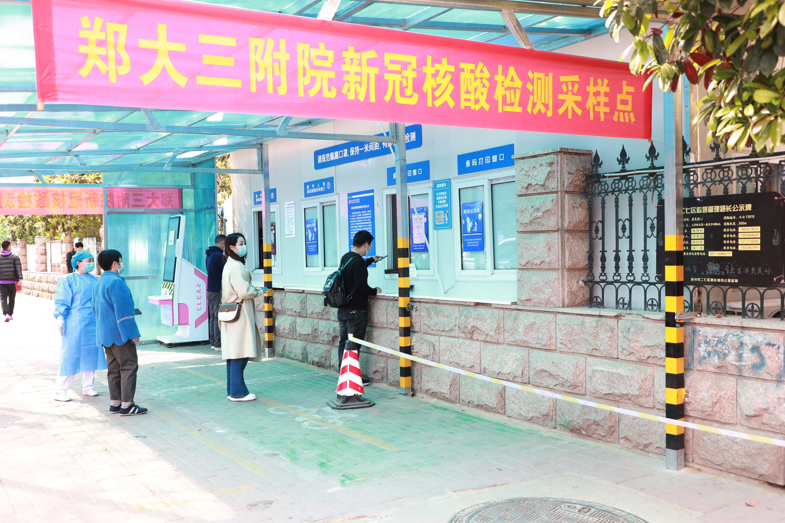
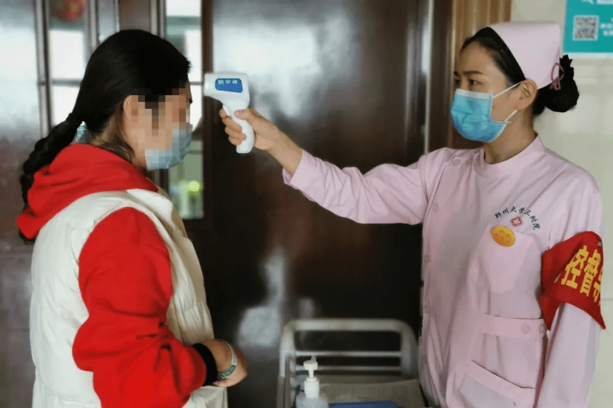
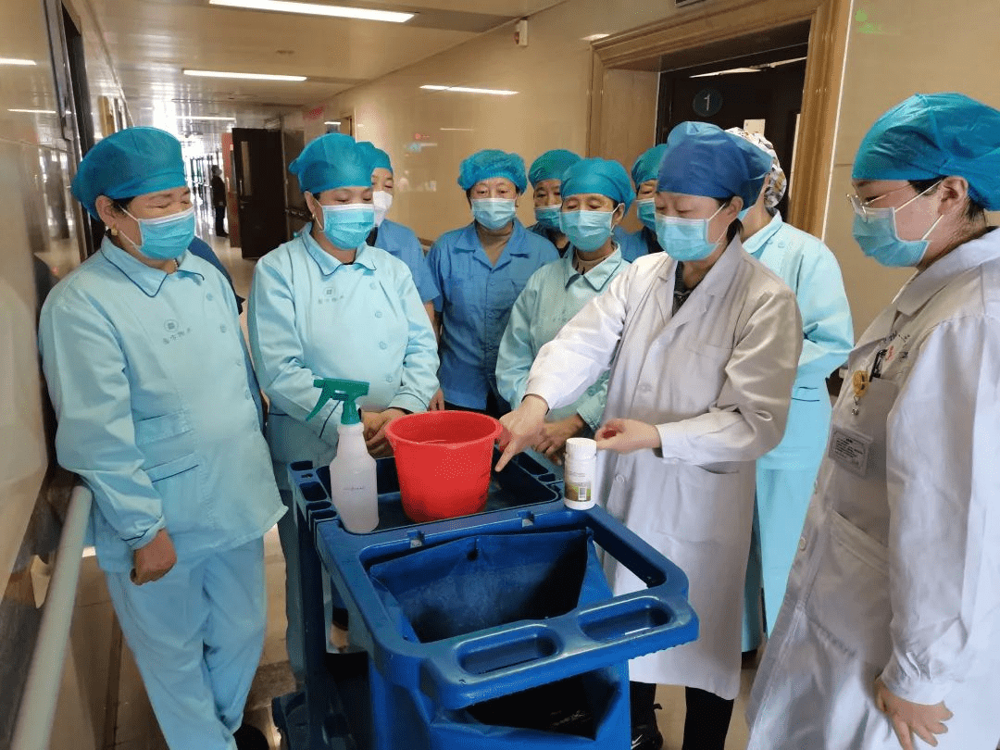
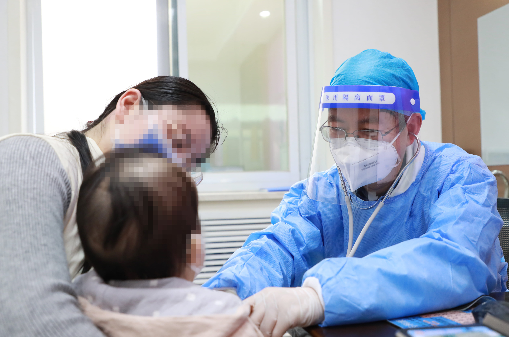
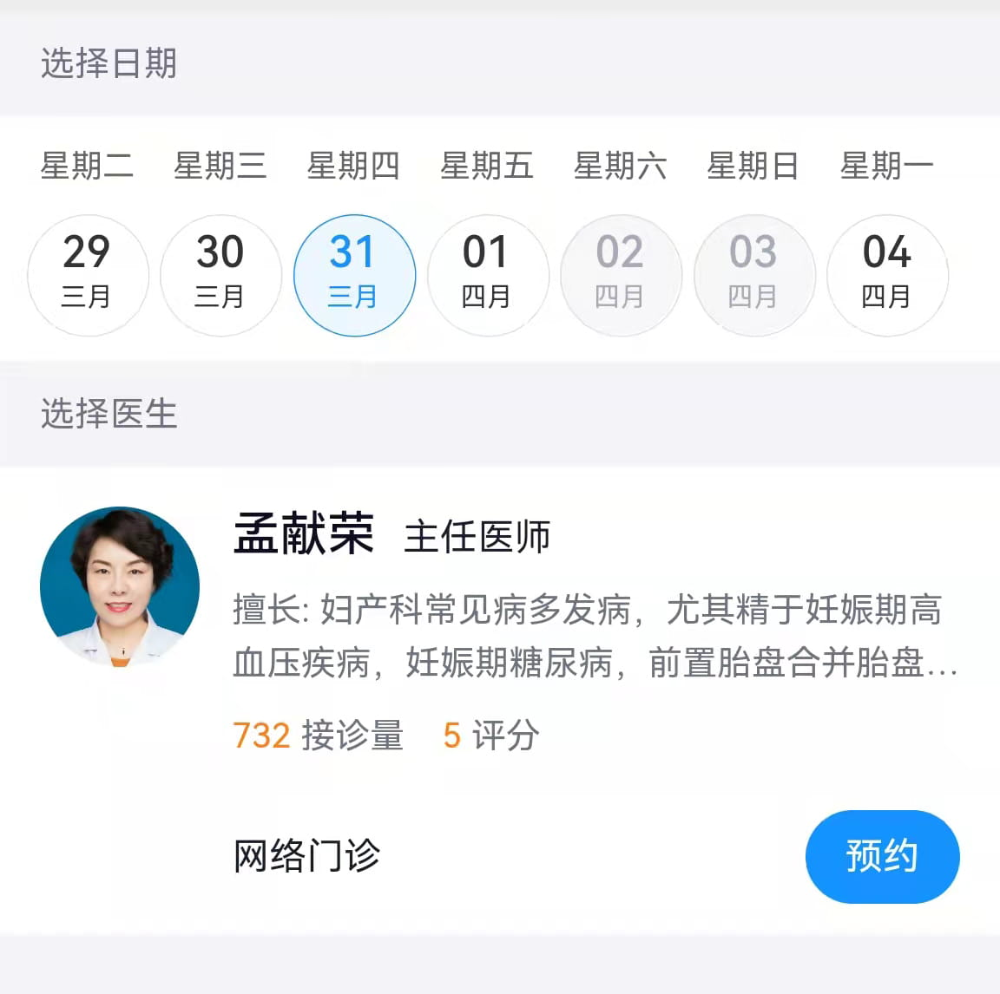

同心抗疫、共克时艰：筑牢疫情防线，共赢抗疫“春天”——第三附属医院疫情防控纪实
日期: 2022年04月07日 信息来源: 党委宣传部 三附院
当前，国内疫情防控形势严峻复杂，为守护广大干部师生生命和健康安全，把病毒隔离于校门之外，郑州大学于近期在各校区校园实施单独运行的封闭管理。封闭管理实施以来，干部职工扛起责任、主动作为，广大师生理解支持、积极配合，学校整体运行平稳有序，教学科研活动正常开展。为展示广大干部师生在疫情防控工作中的责任与担当，辛勤和付出，我们于即日起开辟“同心抗疫、共克时艰”专栏。在此，我们也希望广大干部师生强化防控意识，持续绷紧思想之弦；严格落实要求，全面做到科学防控；坚定信心决心，切勿过度恐慌焦虑；践行文明理念，养成良好生活习惯；潜心笃行问道，完成教学科研任务。让我们同心坚守，共待春晖，为打赢这场疫情防控战奉献自己的一份力量！
筑牢疫情防线，共赢抗疫“春天”——第三附属医院疫情防控纪实
面对近期骤然紧张的疫情防控形势，郑州大学第三附属医院多措并举，及时有力做好疫情防控措施，确保疫情防控各项工作抓紧抓细抓实，统筹推进疫情防控与医疗服务有序开展。
统筹部署织密疫情防线
3月15日上午，医院召开新冠肺炎疫情防控工作专题会，传达学习上级部门关于疫情防控工作专题会议的精神，对当前形势进行分析研判，对医院工作进行再动员、再部署，并对疫情防控领导小组及其相关部门工作提出具体要求，全力以赴筑牢屏障，确保在院患者和全院干部职工安全。
疫情防控专题查房“天天见”，层层压实责任。医院行政总值班每天深入卡口、门诊、病区等地进行实地查看，针对扫码、测温、就诊流程以及公共区域、设施消毒情况进行检查，第二天一早在院领导及各职能科室负责人参加的早交班会上通报情况，针对发现的问题统筹协调、解决落实，确保医院的各项疫情防控措施落地见效。
加强督导问责，筑牢疫情防控纪律屏障。疫情防控督导组每天检查全院各科室在新冠肺炎疫情防控工作中措施的落实情况及工作人员对相关应急预案及处置流程的掌握情况，对发现的问题进行通报和处理。通过监督的常态化，确保广大职工对疫情防控工作思想不松懈，行动不松劲。
红色力量闪耀抗疫一线
院党委将疫情防控作为头等工作来抓，多措并举，号召各个党总支树立大局意识、政治意识，引领党员干部职工时刻冲锋在前，积极参加核酸采样、定点医院支援、流调等工作，让党旗在疫情防控第一线高高飘扬。
医院党委领导班子发挥主心骨和“坚强指挥部”作用，为“抗疫一线”人员提供全方位后勤、生活保障，每次出征时都会对队员送行，在嘱托大家做好防护的同时，提出工作要求和各类注意事项，要求大家以高标准、高质量完成各项工作。
3月21日、3月26日，医院组织300名医务人员先后对郑州市多个区域开展全院核酸检测采样工作。接到命令后，党员医务工作者主动请缨，亮身份、当先锋、做表率，在采样中主动承担与社区工作人员沟通、为重点人群、行动不便的老年人等进行上门采样的任务，彰显党员本色，切实保障核酸采样工作顺利进行。期间，核酸采样队员共完成采样约30万人次。此外，医院还派出多名医务工作者援助定点医院以及协助开展流行病学调查工作。
科学施策筑牢关口防线
把疫情防控工作预先想到位、提前做到位、管控落到位，医院通过多项举措，织密疫情防控网络。 医院大门口设立预检分诊、专人负责查看双码、测体温及开展流行病学问诊，确保第一关口安全，把防控关口前移，对疫情严防死守。 住院患者谢绝探视，患者及陪护非必要不外出。各病房楼入口有专人值守，查看工作人员证件及患者、家属腕带。各病区门口均有值班人员再次核查腕带、测温，做好住院患者及家属的闭环管理。 医院设立三处核酸检测点，优化核酸检测流程，愿检尽检人员不进院就可以完成核酸采样，有效地对检测人群进行“分流”，防范和避免交叉感染。 根据医院总体要求，各个科室认真做好疫情监测、排查、预警工作，严格履行职工外出审批手续，全力保障在院患者和职工安全。
细处着手确保防疫和诊疗“两不误”
全院职工每周定期开展核酸检测，执行住院患者及陪护人员核酸检测要求，发热门诊、检验科、核酸采样点等安排充足工作人员，严格落实发热门诊患者闭环管理、首诊医师负责制和24小时值班制，实行门诊医师和窗口部门工作人员弹性排班，开展分时段预约，缩短患者等候时间，避免患者聚集，全力保障医疗服务需求和患者就医安全。 扎实开展全院全员全流程培训，针对不同层级、不同岗位、不同专业、不同科室的特点设定新冠肺炎培训内容，特别是对预检分诊、发热门诊及病区的医护人员进行全方位的培训，培训结束后，针对性地开展新冠肺炎防控相关知识考核，确保培训效果。 不断完善院内护工、保安、保洁等第三方服务人员管理制度，指定专门部门负责其管理和培训考核，为工作人员提供必需的、充足的个人防护和消毒用品，定期开展健康监测和核酸检测。
绿色通道打通急危重患者救治“生命线”
在疫情防控的特殊时期，保障群众就诊需求特别是危重患者的救治是人民至上、生命至上的重要体现。作为河南省危重孕产妇和新生儿救治中心，医院严格按照省、市新冠肺炎联防联控机制的要求，在做好院感防控的基础下，畅通急危重患者救治绿色通道，时刻准备好接诊从全省各地转诊来的急危重孕产妇和新生儿，全力保障全省妇女儿童健康。 在门诊设置特殊诊室，在病房设置“过渡病房”，专门接诊特殊患者，就诊后严格执行清洁消毒措施，规范门诊、住院与医技部门的就诊流程，针对“特殊患者”严格闭环管理。 近日，一名“红码”产妇来院就诊，由于病情紧急需要马上入院，产科病区护士长立即按照疫情防控相关要求做好准备，启动应急预案，产妇入住应急隔离病房后，安排专门医护人员做好防护措施，不仅对孕产妇及新生儿进行治疗和护理，更在生活上提供无微不至的照护，在病房内为新生儿进行沐浴、抚触等床旁护理，并对产妇进行心理调适指导、讲授健康科普知识。 针对“黄码”就医人员，由科室派专人前往预检分诊点、发热门诊接诊，并全程陪同患者就诊，结束后由专人护送至医院大门口离院。3月23日，儿童发育行为门诊刚一开诊，就接到了医院大门口防控卡点的电话。一位从广西千里迢迢赶来的患儿家属要找儿童发育行为科名誉主任姚梅玲教授复诊。门诊护士长立刻按照防控流程，启动应急预案，派专人做好防护，去医院防控卡口引领家长到门诊应急隔离诊室。同时，医生按照规范做好防护措施，一切准备妥当后，开始了接诊工作。
爱心服务让疫情防控“有温度”
疫情防控期间，医院各科结合实际，为患者提供有温度的爱心服务。儿外科各病区根据自己的专科特色，以点带面开展个性化延续医疗服务。利用电话、微信、视频、APP等多渠道开展形式新颖的出院随访和健康教育，患者通过扫码直接获取文章、视频等形式多样的出院指导、专科疾病健康教育等内容。定期对患者用药、饮食、运动及康复问题给予指导，让患者出院后仍能感受优质服务带来的温暖和贴心。 为方便在院患者的生活，医院实行送餐到病房服务，每日三餐患者都可以在线点餐，有专人送至病房。同时，医院工作人员针对有特殊需求的患者可代购部分必需用品等。 此外，医院持续开展免费互联网诊疗服务，妇科、产科、儿科等多个科室专家可实时在线问诊，满足疫情防控期间患者问诊需求，让患者足不出户就能享受到专业的医疗服务。
作者：zzu